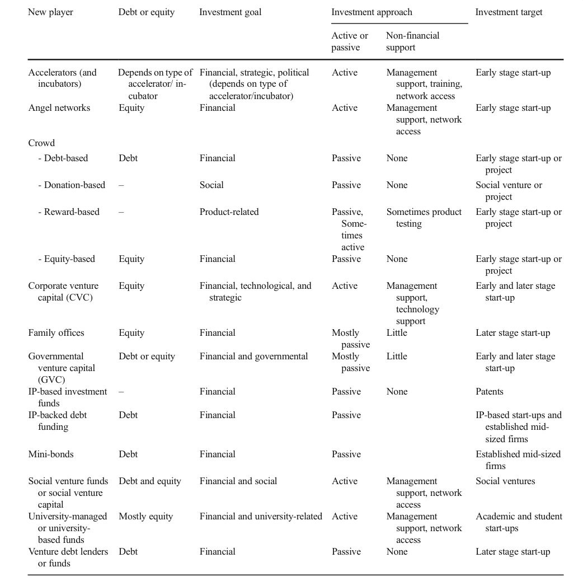
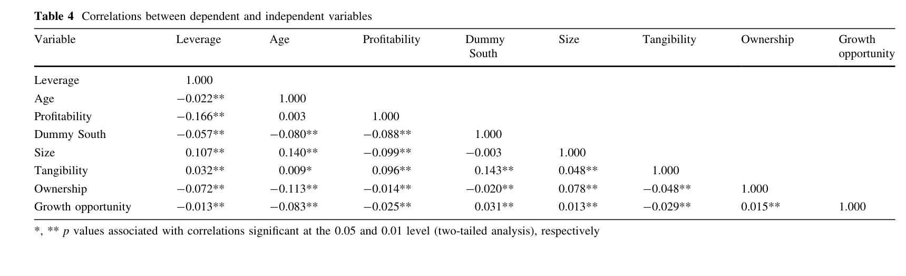
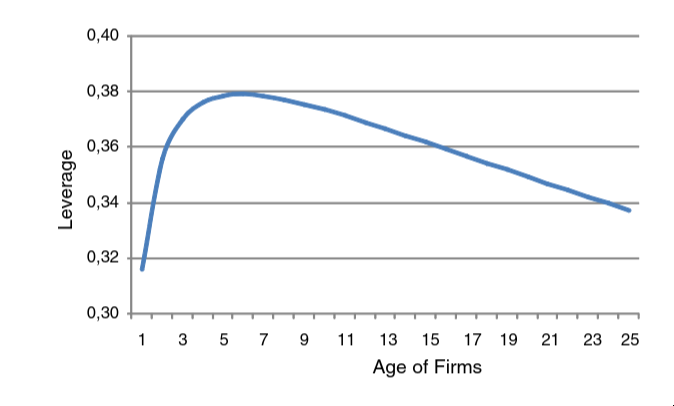

Introduction
What is the biggest obstacle to startups: here
- Lack of internal cash flows
- Lack of collateral
- asymmetric information
- agency problems
An overview and comparison of new players in entrepreneurial finance
Who finances the young companies: here
- Venture capital (VC)
- Business angel (BA)
New people who finance young companies here:
- financial goal-oriented
- family offices
- the crowd
- venture debt funds
- How is the loan collateralized: Instead of traditional collateral, venture debt might be secured by intellectual property, the company’s revenue streams, or even the expectation of future equity rounds. Sometimes, warrants (options to buy equity at a fixed price) are issued as part of the deal to sweeten the return for lenders
- Angel networks here
- Crowdfunding here
- reward-based
- donation-based
- lending-based
- investment-based (equity) crowdfunding
- non-financial goal-oriented here
- social venture funds
- strategic and technological goals in case of corporate venture capital (CVC) firms
- political goals in case of government sponsored funds
- product oriented and community-building goals in case of reward-based crowdfunding
- Accelerators (and incubators) here
- mentorship
- advice
- network access
- shared resources to grow and become successful
- Angel networks here
New valuation models here:
- social return on investment (SROI) measure
- aims to determine the (social) impact of social ventures
Provided help here:
- not only financial
- for example: management and technological support, and more generally the provision of advice, as well as network access

Corporate venture capital (CVC) firms here
- investments by large, established firms into start-ups or growth firms
- process:
- large incumbents like Intel, Google, or Johnson & Johnson take a minority stake in innovative young firms, which remain independent, and help them further develop their promising technologies and markets
- CVC investors provide equity
- CVC investors tend to be more patient investors than independent VC investors (IVC)
- location differences
- in USA
- new ventures prefer to postpone the formation of CVC ties to later stages
- in the EU
- CVC has been 6 to 23% of the European VC market in the years from 2007 to 2015
- in USA
- CVCs are less autonomous relative to limited partnership VCs
Family offices here
- created by families owning large firms
- family bundles its ownership shares into a family office and only has an indirect ownership share in the firm here
- What does “indirect ownership” mean?
- family offices invest 1–5% into high-growth
Governmental Venture Capital (GVC) funds here
- aim yield social payoffs and positive externalities to the society
- Allocation types:
- direct public funds
- investments through government-supported VC-like schemes, often with the aim of facilitating the development of a VC industry within a region or industry
- hybrid private-public funds
- only when the GVC investor enters a syndicate led by a private investor this brings value
- funds-of-funds
- invest in other investment funds rather than investing directly into companies, with the European Investment Fund being a notable example
- direct public funds
IP-based investment funds here
- invest in patents
- IP-based investment funds neither provide equity nor debt, but acquire intellectual assets of a company
IP-backed debt funding here
- exploit the economic value of their IP to obtain loans
- patents are collateral for a loan (the deal is complicated but can work for portfolio of patents)
Mini-bonds here
- public bonds issued in special SME bond segments
- financial crisis where banks when banks didn’t want to finance small companies
Social venture capital funds here
- provide seed-funding to for-profit social enterprise
- provided funding can be both debt and equity
- reasonable financial return while also delivering social impact
- What does reasonable financial return mean here?
University-managed or university-based funds here
- These funds are important for getting the technology ready to hand it over to a development partner from the private sector
Venture debt lenders or funds here
- provide loans to start-ups, but do not require securities/collateral or positive cash flows from start-ups
- performance related to VIX index (measures market uncertainty)
Factors explaining the emergence of new players
Supply-side factors
Economic and financial crisis related factors
- start-ups and small firms with uncertain and risky business models have little chances to obtain bank financing for their ventures here
- low interest rates made debt financing relatively cheap compared to other sources of entrepreneurial financing, provided that the venture’s business model is low risk and that is has enough track record and collateral
- venture capital funds, incubators or crowdfunding provided way for higher returns, This, in turn, increased the chances for innovative, high-risk ventures to receive risk capital
Regulation-related factors
- New exchange platforms that trade pre-IPO shares (or, in general, shares of private firms), such as SecondMarket, the main platform for trading pre-IPO shares of Facebook, or SharesPost, provide alternative venues to investors and employees for cashing out
Technology-related factors
- reward-based crowdfunding, peer-to-peer lending, or in-voice crowdfunding platform
Policy-related factors
- small firms in the US can IPO or collect funds through crowdfunding
- sub-sidized debt financing via state-owned banks and loan guarantee schemes or state subsidies for start-ups and high-growth firms
Demand-side factors
Product market-related factors
- network externalities leading “winner-take-all markets”
- examples
- startups need grow fast in order to establish standards and create lock-in
- leads to high cash-burn rates
- examples
Pecking-order theory
Italy use case
Problems
- Small Italian firms are financially vulnerable because of their dependency on financial institutions for external funding here
- “Capital markets in Italy are relatively undeveloped compared not only to those in the USA but also, to some extent, to those of other large European countries.”
- “Very few companies in Italy have publicly traded corporate debt.”
- “Non-bank sources of debt, other than trade credit, are few. ”
- “In particular, the South of Italy is characterized by underdevelopment and inefficiency in the financial system as well as in the enforcement system. In this case, a poor institutional environment is provided, especially for small and medium-sized firms.”
- “In Italy, credit availability has a strong impact on the growth potential of small firms and on the creation of new ones”
Correlations


Questions
- How does “bank debt plays a crucial role in the start-up phase of many entrepreneurial firms including high-growth ventures and venture-capital-backed start-ups” if startups do not have anything to leverage? here
- If “entrepreneurial firms often seek, but rarely obtain, venture capital finance”, how the heck do startups finance themselves? Is it organic growth (postive cashflow) here
What roles does firm opacity play in the firm’s capital structure decisions? Which environmental factors play a role int he capital structure decision? Explain screening, monitoring, contracting.
debt financing you can offset the interest rate from the taxes. LaRocca article screening, monitoring, contracting